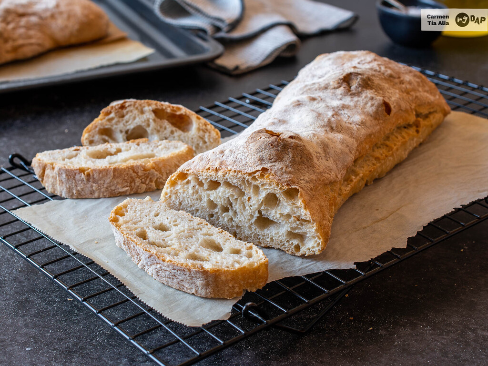

Ciabatta
with stiff biga

Ciabatta ciabatta.jpgdough is unique in many ways. First, it is a very wet and sticky dough, with often upwards of 80 percent or even higher hydration. This requires some special handling (like locking all the doors so the bakers can't run for the exits). Further, there is no preshaping or final shapping -once divided, the dough is simply placed onto a floured work surface for its final proofing. And last of all, ciabatta dough is left unscored when loaded into the oven. The ciabatta formula printed here have a deep, suffusing wheaty aroma; large air holes due to both the high hydration and lack of degassing that occurs when breads are shaped; and a thin, blistered crust. When well made, it yields splintered crumbs when cut, and a long and memorable flavor, as the bread vanishes into happy belies.
In the formula, the ciabatta dough is scaled at 18 ounces. Other possibilities are little rolls -ciabattini- weighing 2 or 3 ounces each, large round loaves of a few pounds (these are sometimes called pugliese), or slender loaves weighing a few pounds that are 4 or 5 feet long. I call these impressive sights "Vermont cordwood".
Overal formula
- 2 lb of bread flour
- 1 lb, 7.4 oz of water
- .6 oz of salt
- .13 oz of instant dry yeast
Biga
- 6.4 oz of bread flour
- 3.8 oz of water
- 1/8 tsp of instat dry yeast
Final Dough
- 1 lb, 9.6 oz of bread flour
- 1l, 3.6 oz of water
- .6 oz of salt
- .13 oz of instat dry yeast
- 10.2 oz of biga
Instructions
- BIGA: Disperse the yeast in the water, add the flour, and mix until just smooth. The biga should be stiff and dense, but add a few drops of water if it is so stiff that it can't "breathe". Cover the bowl with plastic, and leave for 12 to 16 hours at abouth 70 degrees Farenheit. When ripe, the biga will be domed and just beginning to recede in the center.
- MISING: Add all the ingredients to the mixing bowl except the biga- In a spiral mixer, mix on first speed for 3 minutes in order to incorporate the ingredients. As the dough is coming together, add the biga in chunks. If necesary, correct the hydration by adding water of flour in small amounts. The dough will be quite sticky and slack at this point. Finish mixing on second speed for 4 to 5 minutes. Wetter doughs develop more slowly in the bowl thhan dry ones, and the exra mixing helps to develop the dough structure a little more. The dough will be rather loose and sticky, but when tugged on, some definite dough strength will be noted - there sould be some "muscle" to the dough. The dough can also be mixed using the bassinage technique. Desired dough temperature: 75 degrees Farenheit.
- BULK FERMENTATION: 3 hours
- FOLDING: Folding the ciabatta dough has an eenormous impact on stregthening it. Fold the dough twice, after 1 hour of bulk fermentation and again after 2 hours. Spread a considerable amount of flour on the work surface of the folds, and fold quickly and assertively. Be sure no extra flour is incorparated into the dough as it is folded. Good folding is essential to eventual bread volume, and since there will be no final shaping to the dough, the folding represents the baker's last chance to increase dough strenght.
- DIVINDING AND SHAPING: Flour the work surface copoously. Invert the dough onto the work surface and gently pat out the larger air bubbles - but remenber that for the mosrt part the fermentation gases and the associated interior holes and pockets in the dough should remain intact. Lightly flour the top surface of the dough. Have a ready sufficient number of bread boards that are thoroughly (but not too thickly) covered with sifted bread flour. Cut a narrow strip, about 4 inches wide, down the length of the dough. Then cut the strip into rectangles weighing 18 ounces. If the dough is too ligh, place the additional bits of dough needed to correct the weight into the main dough piece. Place the dough piece onto the foured bread board, with the scrap on top. If it is more square than rectangular, give a gentle stretch, but be careful not to tear the dough. When all the dough has been scaled, cover the boards with baker's linen and then plastic.
- FINAL FERMENTATION: Approximately 1 1/2 hours at 75 degrees Farenheit.
- BAKING: The dough will be very ligh and fragile when risen (don't sneeze in its vicinity-it may collapse). To transfer the proofed ciabatta dough to the loading conveyor or baker's peel, spread the ifngers of both your hands wide. Bring them alongside the long length of the dough and, with a quick, deft stroke, invert the dough piece so that the side that was touching the bread board is now on top. Now, place one hand at each end of the dough piece, bring your fingers underneath, and pick it up. Here you will slightly bunch the dough for easier transport; there should be wrinkles in the center of the loaf as you transfer it to the conveyor and, as you do so, unbunch your hands so the loaf is agan at its full length. Take care to place the loaf exactly where you want it on the conveyor or peel -it is so fragile that you must minimize anty excess moving of the loaves. Fill the over steam, the trembling ciabattas, steam again, and bake at 460 degrees Farenheit for 24 to 38 minutes. An important note: One of the greaters attributes of ciabatta is its crisp crust. As hydration increases, so does baking time. If the ciabatta is taking on too much color in the oven too soon, lower the over temperature by 10 or 20 degrees. But by all the means give a full bake- if taken out too soon, the considerable internal moisture in the bread will soften the crust, greatly impairing eating quality.